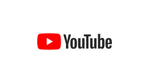

Brief History of Youtube and Why They Were so Popular
Authored By: Daniel Drechsel
THE Teens
Youtube was the second most popular website in the Teens with having over 27 trillion page views. Youtube is a video sharing website created by Jawed Karim, Steve Chen, and Chad Hurley in 2005. After a incredibly quick growth google aquired youtube less than a year after its launch. In 2009 youtube launched full HD videos so now videos could be in 1080p instead of 720p. Throughout the years Youtube added ads, live tv streaming service and live streaming. Youtube has around 5 billion videos watched per day and 300 hours of videos of uploaded every minute. Youtube has become a fixture in our lives. Go back to the Teens

Youtube Logo